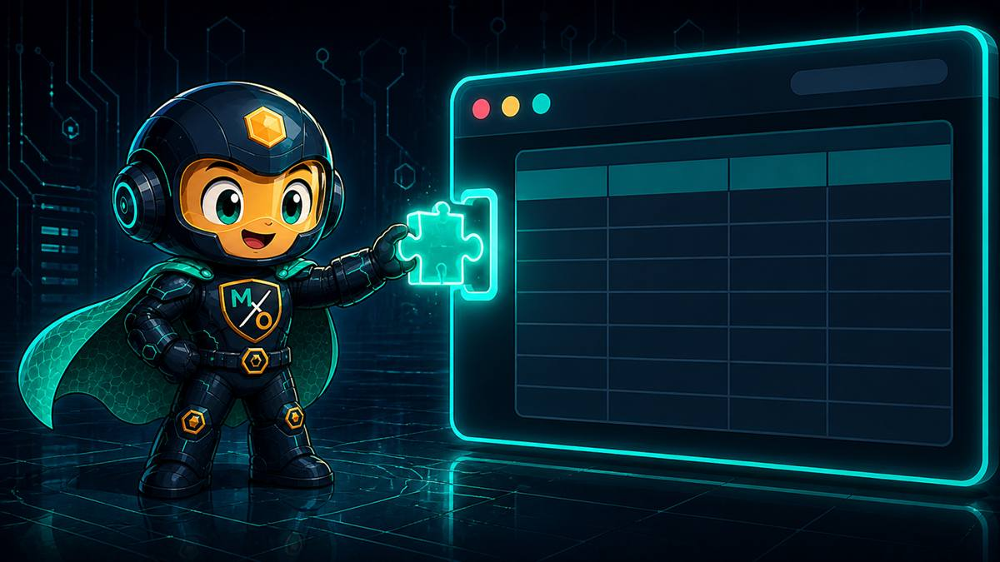
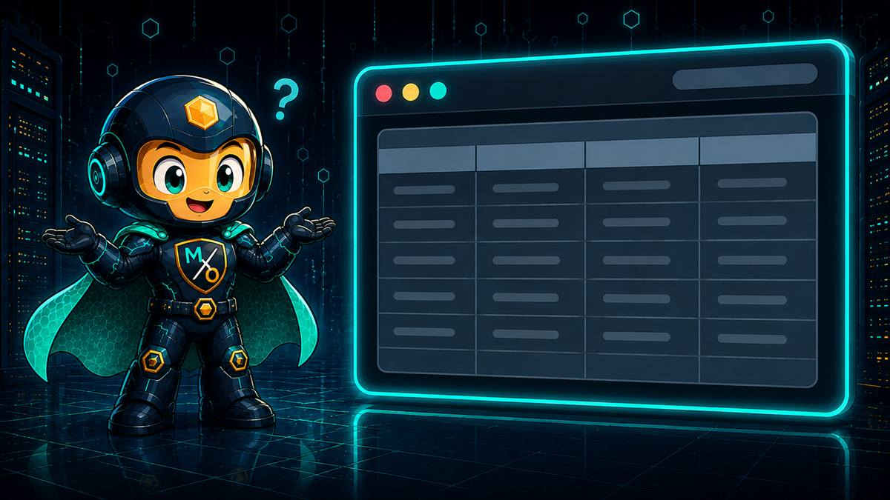

THE CONSOLE
OVERLAY
A browser extension that puts MaxOps cost and finding chips straight into AWS Console tables — reading only from the MaxOps on your own machine.
FINDINGS WHERE
YOU'RE ALREADY
LOOKING
You're in the AWS Console because something needs doing. Switching to another tab to ask whether that instance is wasteful is friction — so I come to you instead.
The extension watches for AWS Console resource tables and quietly adds a column. Each row picks up small chips: what MaxOps thinks the resource costs, and whether it has a finding against it. The Console's own data is untouched — nothing is edited, only appended.
Does it change what AWS shows me?
Never. I add a column beside what's already there. Every number the Console shows you is still the Console's own.
Teal is the cost MaxOps estimates. Amber is a finding against this exact resource.
Both are clickable — they open that resource in MaxOps, where the evidence lives.
WHAT A CHIP
SAYS
A row with no chips is not necessarily a healthy resource — it may simply be one MaxOps hasn't scanned, or a type the overlay doesn't cover yet. Page 7 is about exactly that.

PUTTING IT
IN
The extension ships as a folder per browser rather than through a store. You load it as an unpacked extension — the normal route for something that only ever talks to software on your own machine.
Three builds, one behaviour. Chrome and Edge share the newer extension format; Firefox uses its own. You want the folder matching your browser — loading the wrong one simply won't start.
Nothing is bundled from the internet and there is no account to create. Once loaded, open any AWS Console resource page and it begins working.
Where the chips come from.
Where a chip takes you when clicked.
Both default to the standard local ports. If you run MaxOps exactly as onboarding described, there is nothing to change.
POINTING IT AT
YOUR MAXOPS
Two addresses, and both must be on your own machine. One is where the chips are fetched from; the other is where clicking a chip takes you.
They are separate because they genuinely are two different things — the backend answers questions, the app displays them. Most people never touch either, but if you moved MaxOps to a different port, this is where to say so.
Could I point it at a MaxOps running on a shared server?
No — and deliberately. The extension is only permitted to reach localhost and 127.0.0.1. Any other address is refused by the browser before I ever see it. Next page.
IT ONLY TALKS
HOME
An extension that reads your AWS Console deserves suspicion. So mine is built to be checkable rather than trusted.
localhost and 127.0.0.1 and nothing else. Not "doesn't call out" — cannot. The browser enforces it.You do not have to take any of that on faith. The permissions are listed in the extension's own manifest, in plain text, in the folder you loaded — and your browser will show you the same list on its extensions page.
IT DOESN'T COVER
EVERYTHING
Worth saying plainly rather than letting you discover it: the overlay understands five resource types. I check thirty-one.
Roughly 20 of the 112 checks produce findings the overlay can show. The rest are real, and visible in the MaxOps dashboard — they simply have no chip in the Console yet.
So a bucket with no chip might still have findings?
Very likely. S3 has more checks than any other service — twelve — and the overlay doesn't cover it at all yet. Absence of a chip is not a clean bill of health. The dashboard remains the complete picture.
THE FIVE,
AND THE GAPS
| Console page | Chips? | Notes |
|---|---|---|
| EC2 instances | Yes | Cost and findings on the instances list. |
| EBS volumes | Yes | Cost and findings on the volumes list. |
| RDS databases | Yes | Cost and findings on the databases list. |
| DynamoDB tables | Yes | Cost and findings on the tables list. |
| ElastiCache clusters | Yes | Redis, Valkey and Memcached clusters. |
| S3 buckets | Not yet | The largest gap — 12 checks, none of them reachable from the Console. |
| Auto Scaling groups | Not yet | 9 checks. |
| OpenSearch domains | Not yet | 8 checks. |
| EMR clusters | Not yet | 6 checks. |
| Aurora clusters | Not yet | 6 checks. Related RDS instances may still show chips. |
| Everything else | Not yet | Lambda, ECS, EFS, Redshift, Glue, Kinesis, VPC, CloudWatch, snapshots and more. |
The five that are covered are the ones people spend most time staring at in the Console — which is why they came first. That is a reasonable starting point, not a finished job.

NO CHIPS
APPEARED
In practice it's almost always the first one. The honest answer to "why is this page bare" is usually that I don't cover that resource type yet.
FIVE TYPES TODAY.
ONE SHORT
CABLE.
Cost and findings beside the rows you were already reading — fetched from your own machine, on the resource types covered so far, with the dashboard still holding the complete picture.